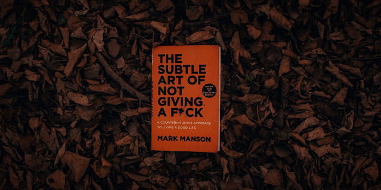

Admin
October 2, 2021
Book Review
THE SUBTLE ART OF NOT GIVING A F*CK : Manson, Mark | "You and everyone you know are going to be dead soon"
I'd call this a self-help book, though Mark Manson is an unusual self-help author. He recognizes the negative parts of the self-help mania, such as how always pursuing betterment in your life might focus on what you don't have and what's wrong with you, which may lead to . . .